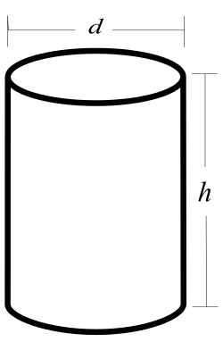

In the previous half of Chapter 1, we have talked about init functions and various particle properties to go with them, which already gave us plenty of options for simple particle effects.
In this second half of the chapter, we will learn how to change the spawn rates of particles, then go over some remaining sprite particle fields we have not covered yet, such as the emitter index and emitter node, acceleration vector, size ratio factor and color fading time. In particular, we will examine how you can use the emitterIndex and emitterNode fields to mimic the AddEffect feature known from TRNG, but with fully customizable effects, created by you.
The end of this chapter hosts an optional bonus section that showcases some neat tricks made possible thanks to bit of math, to generate various spatial arrangements and intricate spawning patterns for particles. This last section will mosty likely be enjoyed by those readers who have a knack for mathematics, so if you are not very interested in topics of 2D and 3D geometry or parametric equations, feel free to skip it and head directly to the next chapter.
Note: this section is a tad more technical and may take some resilience to get through it. However, I strongly believe what you learn thanks to it makes this effort worth it, please don’t skip this one!
Though this is also a subjective matter, I think the way our dust particles spawn at the moment is a bit too “concentrated”. Perhaps the particles should be spread out more, to cover a larger area (you may disagree with me, like I said it’s subjective). Regardless if you agree or not, I will tell you about the ways to modify the particle density and spawn rate, for when it becomes necessary.
We can do one of the following, or both:
spread out the dimensions of the volume in which particles can spawn (by increasing the random range of the position randomizing variables dx, dy, dz in our script);
make the particles spawn less frequently (i.e. not on every frame).
Spreading out the spawn dimensions
The first point should seem rather straightforward, we can do that by increasing the range of the dx, dy, dz variables for generating the random numbers we add to the position vector. To make the particles cover a larger area, we simply change the min-max range in the randomFloat() calls. Let’s try increasing it to (-1024, 1024) for dx and dz, making the effective volume a box of dimensions 2048 x 1024 x 2048.
local dx = randomFloat(-1024, 1024) -- 2048 total
local dy = randomFloat(-512, 512) -- 1024 total
local dz = randomFloat(-1024, 1024) -- 2048 total
Easy-peasy. Now, the same amount of particles spawns as before (1 per frame), but the volume in which they spawn became bigger, precisely 4 times. Hence, there is a smaller average density of particles per unit of space.
Spawning particles with a different frequency than 1 per frame is not so straightforward, though – how do we make particles spawn less often? After all, we recognize the init function is being called by the plugin once per frame.
Indeed, it’s true that the init function will be automatically called once per frame by default (generally speaking, there is a specific particle group setting which controls whether this is the case or not). I never said it necessarily must spawn a particle on each of those frames though, now did I?
Recall the Lua Crash Course section on if conditions. You will greatly benefit from refreshing this knowledge, if you are not up to speed with that aspect of Lua.
Probability-based spawn rates
Random number functions can be used for simulating probabilistic outcomes, like rolling dice or flipping coins (or generating some other odds). Specifically, I’m referring to randomInt() for this purpose. What would happen if we spawned a new particle, but only under the condition that the result of randomInt(1, 6) was equal to 3, for example? We would get a 1 in 6 chance of the particle spawning a given frame, the same as with rolling out a 3 on a die (“die” being the singular form of “dice”). Or perhaps randomInt(1, 2) being equal to 1, as with a coin flip (“heads” or “tails”) that resulted in “heads”. To make room for this element of chance, we must make some small alterations to the code around spawning the particle.
The main idea is to have a variable, to which we assign a random integer in some particular range, for example 1 through 6. We’ll give this variable the descriptive name dice. To this variable we then assign the result of randomInt(1, 6), which will be our random integer between 1 and 6, different on each frame.
local dice = randomInt(1, 6)
I will proceed to describe how we can construct our if conditional statement around the dice variable. There are in fact two ways of reasoning about it, both leading to the same outcome.
First of all, we should establish the condition – when should our particle spawn? Whenever we “roll out” a 1 with dice, for instance. It wouldn’t matter if we chose 2, 3, 4, 5 or 6 instead, since there should be an equal probability that we get any of these six outcomes, if the die is fair.
As for the two ways of writing the if condition, we can perceive it from two complimentary perspectives:
we want to spawn the particle only if the value of dice is 1 (dice == 1)
we want to return from (skip further execution of) the function if the value of dice is greater than 1 (dice > 1).
I hope it makes sense to you how both of these viewpoints effectively lead to the same outcome and are equivalent to each other. The ultimate result is that the particle is spawned only on those frames where the dice variable had the value 1.
Let’s analyze setting up the if condition by following the sentiment of the first perspective. We need the if keyword to begin the conditional statement. Next we describe the condition: dice == 1. At the end of the line, we put then:
local function dustInit()
local dice = randomInt(1, 6)
if dice == 1 then -- if we rolled out a 1
local part = createSpritePart(dustgroup) -- create a sprite particle of the "dust" group
What follows after the then keyword becomes a code block belonging to the if statement, up until first encountered end keyword is reached. We would now need to place everything related to spawning the particle (creating the new particle instance and initializing the fields) inside the code block of the if condition. Now, there is a very lazy way to do this, which involves simply placing an extra end keyword before the end that terminates the dustInit() function. Remember, Lua does not care about whitespaces (unlike the Python programming language, for instance), it only cares that the code-block is between the then and end keywords, does not matter how:
local function dustInit()
local dice = randomInt(1, 6)
if dice == 1 then -- if we rolled out a 1
local part = createSpritePart(dustgroup) -- create a sprite particle of the "dust" group
end -- end terminating if code block
end -- end terminating dustInit() function
However, on top of this being lazy (something which I do not mind at all, personally), I consider it quite ugly and unintelligble (which I do mind, actually). On the other hand, making this code more structured and comprehensible would require adding a lot of whitespace indentation to several lines, which I don’t want to do, either. Which will prevail here, tidyness or laziness?
Let’s scrap this idea. I have a smarter solution that will leave the dustInit() function intact (needing no changes), but which still allows us to change how frequently the particles get spawned by it. Let’s define a completely new function belowdustInit(). We can name it something like dustInit_chance() (or whatever tickles your fancy):
local function dustInit()
local dice = randomInt(1, 6)
if dice == 1 then -- if we rolled out a 1
local part = createSpritePart(dustgrpup) -- create a sprite particle of the "dust" group
local function dustInit_chance() -- our new function
end
We will move the dice variable and if condition from dustInit() into this new function, then remove it from the old function, reverting it to its original state:
local function dustInit()
local part = createSpritePart(dustgroup) -- create a sprite particle of the "dust" group
local function dustInit_chance()
local dice = randomInt(1, 6)
if dice == 1 then -- if we rolled out a 1
end
In the if condition block that’s now inside dustInit_chance(), we call our original dustInit() function from above. Then we terminate the if condition block with the end keyword:
local function dustInit_chance()
local dice = randomInt(1, 6)
if dice == 1 then -- if we rolled out a 1
dustInit() -- call our original init function
end
end
One last thing needed to make this work is to replace the dustInit function in createGroup(dustInit, nil) with our new dustInit_chance function.
dustgroup = createGroup(dustInit_chance, nil) -- swapping out original dustInit function with dustInit_chance
Now all that’s left is to try it out in-game.
The spawn rate of the particles has definitely gone down. A bit too much, perhaps. Back in our dustInit_chance(), we can decrease the randomInt() range on dice from (1, 6) to (1, 2). This should now result in a 50/50 likelyhood of spawning the particle. If we really want to, we can also change the name of the variable to coin to reflect that.
local function dustInit_chance()
local coin = randomInt(1, 2)
if coin == 1 then -- if we got "heads" on the coin
dustInit() -- call our original init function
end
end
Nice, that’s closer to what I had in mind.
The method of checking a randomly generated integer is based on probability. It results in an average spawn rate of about 1 particle per 6 frames for the “dice” probability (or 1 particle in 2 frames for the “coin” probability). This is only true when averaged out over a certain period of time, though. In one exact moment, it’s not possible to determine if we get a particle to spawn or not. There’s a very small, but entirely possible chance to get a “streak” of 8 frames with spawned particles in a row, or a “streak” of no particles for 10 consecutive frames, even if the probability would suggests otherwise. Such sequences, though rare and tend to average out in the long run, are unavoidable with statistical probabilities, where events occur only with a chance.
What if we do not want such probabilistic outcomes, based on certain odds, but predictable ones? Is there way to make an event occur with a consistent, precise interval, e.g. where we are guaranteed to get exactly 1 particle spawned every 15 frames? Yes, this can also be accomplished.
One way to do it is by using an API function called getGameTick(). This function does not accept any arguments and returns the number of game ticks (frames) that have elapsed in-game since starting the current level (reminder that the TRLE engine runs at a constant 30 fps, so 1 second passes every increment of 30 game ticks). The tick counter doesn’t go up while in the inventory or pause screens. It resets to 0 when a new level is loaded and starts counting up again. It’s also saved in save games and reverted back to the saved value after reloading. Effectively, it behaves like a “clock” that measures how much game ticks passed since starting the current level. Whenever we want something in an effect to depend on the passage of time, we can reliably use the getGameTick() function. Right now, we can use it for spawning particles in a rigid interval.
The getGameTick() will return the elapsed number of ticks since the level began. But that alone will not get us where we want. We still have to do something with that value, which will result in a particle spawning once every certain number of frames. Let’s a look at the table of Lua arithmetic operators for a moment. We are looking for an operator that can return the remainder of dividing one number by another. The modulo operator % seems to fit the description, right?
The idea here is rather simple, we perform a modulo operation on the value returned by getGameTick(), where the dividend (the number to the right of the modulo operator) is the desired spawn interval, in frames.
We will adapt our existing dustInit_chance() function, making certain changes to it. We may rename our dice / coin variable to tick. Let’s go for a spawn interval of 1 particle per 15 frames, or one every half-second (since there are 30 frames to a second in this engine). We make the following changes:
local function dustInit_chance() -- take the tick counter value and get remainder from division by 15 (our interval)
local tick = getGameTick() % 15
if tick == 0 then -- on every 15th frame
dustInit() -- call our original init function
end
end
What the modulo operation is doing is it will return the remainder (the “leftover”) of dividing the elapsed game tick count (returned from getGameTick()) by 15. This remainder is an integer between 0 and 14 (inclusive) and it gets assigned to tick. When we check if tick is equal to a specific value in the range of the remainder, such as 0, this condition will be true exactly once every 15 ticks (as the game tick count keeps increasing).
After running the level, we see that the particle is indeed spawned precisely every 15 frames, or once per half-second. You can easily get any other interval, all you need to do is change the integer to the right of the modulo operator.
The interval() function
There is an even easier way to spawn a particle on every Nth frame. It is an API function named interval(), the purpose of which is precisely to do some action once every given number of ticks. The function takes a mandatory first argument, the number of ticks in the interval. This has to be a positive integer (which makes perfect sense, an interval must be at least 1 frame long). The function returs a boolean value, true if the current game tick is divisible by the first integer given to interval() (e.g. if we use 15, it will be true on the 0 tick (immediately after launching the level) and then every 15th tick). In any other case, the returned boolean is false. With interval(), we can convert the code of dustInit_chance() to the following:
local function dustInit_chance()
if interval(15) then -- on every 15th frame
dustInit() -- call our original init function
end
end
And the result will be identical to the previous version with getGameTick() and the modulo operator, just sparing us a couple steps.
The interval() function can also take an optional second argument, the delay. This is also an integer, but in the range between 0 and the first interval argument (so the allowed range depends on what the first argument was). This second argument serves to offset the tick timer, by the given number of ticks. Effectively, this allows to delay the interval condition by the specified number of frames. Going with our example again, if we use interval(15, 1), the interval function will return true 1 tick later than interval(15) or the equivalent interval(15, 0). Likewise, interval(15, 5) returns true 5 ticks later, interval(15, 10) returns true 10 ticks later, and so on. This can be useful to set up a sequence, where in a given interval, you trigger something on the 1st, 5th, 9th and 14th frame, in sequence (and with an optional else statement, you can do something default on all other, unspecified frames):
if interval(15, 1) then -- on 1st frame -- do 1st thing
elseif interval(15, 5) then -- on 5th frame -- do 2nd thing
elseif interval(15, 9) then -- on 9th frame -- do 3rd thing
elseif interval(15, 14) then -- on 14th frame -- do 4th thing
else -- do default thing on all other frames in interval (optional) -- optional default thing
end
Such a sequence repeats itself every 15 frames, behaving like a TRNG Organizer with FO_TICK_TIME + FO_LOOP.
Spawning multiple particles per frame
To make our life easier for limiting particle spawn rate, we have written a “master” function, dustInit_chance(), which decides when to spawn a dust particle and calls the original dustInit() function to spawn one. Meanwhile, the only job of dustInit() is to spawn and initialize a single new particle of the dust group. Make note of the fact that the init function given to a particle group definition does not necessarily have to be the very function that actually spawns the particles (in this case, dustInit()), but can be a completely different one (e.g. dustInit_chance()), which provides more specific control over when and how a particle is spawned – we will explore this topic and its implications even further at some point.
This method of modularizing code into functions and distributing one job per function is a stellar approach, indicative of well-written code. This is because you can easily tell what each function is responsible for, when you know it only has a single job (also naming your functions appropriately with their performed tasks massively helps with this). On the contrary, if we squeeze everything together into one big function, it obscures the whole picture and you would have to remember this “monster” function does many jobs, some of which are not really related to the name of the function.
Of course, we had a rather trivial example here. In programming practice, this one-job-only rule isn’t something that can always be enforced reliably, there will be inevitable edge cases and debacles of what constitutes a “single job” for a function. As a general guideline, though, you should prefer to write each function with (ideally) one task in mind. If the task consists of several smaller tasks, you isolate those sub-step tasks into smaller functions and call them each from the bigger function (within reason, that is). This results in cleaner and more elegant code. As a reminder, functions exist specifically to reduce repetition and help to code things more efficiently.
Anyway, once we have realized that the dustInit() function is an executable unit that spawns a single dust particle on demand, it’s trivial to modify dustInit_chance() again, this time to spawn several particles per frame. You simply call dustInit() however many times is required inside the master dustInit_chance(). Should you need to spawn particles in the tens, hundreds, or in some randomized amount, preferably use for loops. For just 3 particles, repeating the function call three times in a row is hardly the worst thing in the world.
local function dustInit_chance() -- spawn 3 dust particles per frame
dustInit()
dustInit()
dustInit()
end
And that’s all there is to it. We can see the clear benefit from modularizing code into functions – logical units that each perform a single task. This way, you may use that one function several times in different places, instead of copy-pasting and adapting the same code snippet over and over. This becomes even more apparent when the particles must be spawned in bursts, batches, in a particular time pattern or under highly specific conditions.
Okay, time for a moment of honesty. The original spawn rate of 1 particle per frame did not bother me at all, nor do I consider it excessive. This whole section was just my cunning, evil trickery to explain how you can modify the particle spawn rates! Muahahahaha!
Nonetheless, I hope that after working through all these examples, you know how you can decrease or increase the frequency of not only particle spawning, but any kind of event. Both the probability-based and interval-based approach will be making an appearance again in later chapters, but we will really be needing it then (really, I promise)!
You can keep using the dustInit_chance() function if you indeed want a modified spawn rate of the dust particles, otherwise we can just restore the good old dustInit in the call to createGroup().
dustgroup = createGroup(dustInit, nil) -- restoring the original dustInit function
When we were giving our particles a position back in the first half of Chapter 1, we grabbed the absolute coordinates of Lara from some spot in the level. You might agree this is a rather tedious, mundane process. Specifying position this way is not very flexible, either. What if we want to change the position of the effect?
Do we keep grabbing new coordinates with Lara in DOZY mode? Or what if we want to spawn our dust particles in a second spot, do we need to replicate the dustInit() function, but with changed XYZ coordinates?
No, this would be a ridiculously tedious thing to do whenever we want to place the same effect somewhere else in the level.
If you are familiar with how FLEP smoke emitters work, you are aware that they are spawned from placed SMOKE_EMITTER_WHITE and SMOKE_EMITTER_BLACK nullmesh objects, with the particle properties depending on the settings of a given OCB number in the patch. Anyway, this allowed to spawn the particles depending on where the emitter nullmesh was placed, and the nullmesh emitted particles after getting triggered. This emitter system seems more convenient, since it allows you to easily adjust the exact location the particles will appear in and even place the same effect in several spots. It would be awesome if we could have that level of convenience available with our dust particles, wouldn’t it?
It’s really obvious where I’m going with this, so let’s cut to the chase.
The particles from this plugin have two specific properties / fields that deal with this exact sort of thing, the part.emitterIndex and the part.emitterNode. In this section, I will focus on explaining the part.emitterIndex field.
Specifying a part.emitterIndex in the init function ties the particle’s position to an emitter item. What is this emitter item, you ask? It can be any moveable object in the level. Yes, you heard me correctly, any moveable item can serve as the particle emitter object. It does not have to be a nullmesh, it can also be an enemy, it can be a trap, pushblock, pickup or animating. It can even be Lara herself.
What kind of index does this emitterIndex field expect, though? It is sadly not the NG script index, which was probably your first thought, but rather the internal Tomb4 item index (there are specific reasons for this, the engine-side Tomb4 indices are more general-purpose, as used by the underlying engine). However, do not fret, as the API has a function that resolves this easily. The built-in function getTombIndex() takes the NG index for the moveable and converts it to the corresponding Tomb4 item index (if a moveable with the given NG index exists, that is, otherwise it returns the erroneous value -1 for an invalid item).
Differently than other fields, the uninitialized part.emitterIndex field starts out with value -1 and not 0. This is because 0 is also a valid Tomb4 index that any item in the level could have. If part.emitterIndex has the default -1 value, the position coordinates given to the particle are interpreted as global (absolute) coordinates in the level. On the other hand, when it is set to a valid item index, the particle’s position coordinates will become relative to the corresponding emitter item (though this is an oversimplification, the full picture of how the emitterIndex works will be revealed later, in context of the particle tethering system).
To illustrate this with a specific example, if the particle has been assigned part.pos coordinates: (x = -256, y = -768, z = 1536), the particle will be offset by those position coordinates from the emitter item’s current position, which could be (x = 1024, y = 0, z = 2048). When determining where the particle actually appears in the level map, i.e. its (xFinal, yFinal, zFinal) coordinates, the particle position vector becomes relative to the local coordinate system of the item, where X offsets are to the left and right of the item, Y offsets are above and below the item, and Z offsets are to the front and back of the item. The offsets are calculated from the emitter item’s pivot point (the origin, as seen when viewing the object in e.g. WadTool). Assuming the case that the item has the default rotation after being placed in the level map, the particle attached to the emitter will receive the following (xFinal, yFinal, zFinal) coordinates:
However, if the emitter item is in any way rotated from the default placement, this calculation is less straightforward. The part.pos offsets of the particle are rotated with the item’s frame of reference, which effects the (xFinal, yFinal, zFinal) coordinates. Perhaps this text explanation is hard to grasp without a visual aid. Refer to the diagram below for further clarification. The final, “true” XYZ position the particle ends up with, factors in the facing of the emitter item (X is left/right of the item, Y is up/down, Z is back/front):
There are some pitfalls to be wary of. If the part.emitterIndex is not set to a valid Tomb index of some moveable (i.e. has the default -1 value), the particle will spawn at the global world coordinates (x = -256, y = -768, z = 1536), which in this case would be out of level map bounds, due to the negative X coordinate. Another is the reverse situation, where we use a valid part.emitterIndex value (making the part.pos relative to the emitter), but (mistakingly) also give the particle global level offsets, such as (x = 22856, y = -17408, z = 35132). This will cause the particle to be offset by a huge distance away from the emitter item, making it seem like the particles aren’t spawning at all and leading to confusion or frustration. In fact, they will indeed be spawning, it will just be very far away from the emitter item, because these large coordinates are being added with respect to the reference frame of the emitter item!
When used properly, avoiding the two pitfalls described above, this emitter mechanism simplifies setting particle positions considerably, as it is enough to specify the part.emitterIndex and the offsets from the emitter in the particle’s part.pos vector, the particle system works out the rest. This achieves something similar to FLEP particle emitting nullmeshes. And what’s more, this works for any moveable item this time, not just SMOKE_EMITTERs. This means you can even have enemies or Lara spawning particles into the level, without the need for janky workarounds, like copying the item position to the emitter nullmesh with TRNG scripts. Cool!
Of course, there is more to the FLEP smoke emitters than simply spawning some particles in the vicinity of the nullmesh. Which particles are spawned is determined by the OCB number of the nullmesh. Also, the FLEP particles spawn only when the emitter nullmesh has been activated by a trigger and thus can be untriggered to deactivate the particles. This is perfectly possible to recreate in the particle system as well, but it’s a topic for the later chapters, where we will learn about getting a moveable item’s properties, such as the OCB number, or checking its activation status (triggered / untriggered). At the moment, it will be enough to just make one kind of particles spawn around a placed item in a continuous way.
Using the emitterIndex field
I will signal only the very basics of using part.emitterIndex for now, which is making the particles spawn at a chosen moveable’s position, regardless if it’s been triggered or not. Let’s say we have an nullmesh item placed somewhere, such as a CAMERA_TARGET (or any other moveable item, for that matter). What must we do to get the dust particles to spawn around it?
We must obtain its NG script index value first. In NGLE, this is the number in parentheses (e.g. (421)) visible when highlighting a placed object. In TE, this is displayed as the ID value in square brackets when an object is selected, e.g. [ID = 12].
We take this number and pass it as an argument to the getTombIndex() function. We then assign this to the part.emitterIndex field (note the importance of the getTombIndex() function for converting the NGLE index).
part.emitterIndex = getTombIndex(12) -- get tomb4 item index of item with NG index 12
There is one more thing we should do, which is removing the old level coordinates written down from Diagnostics. They are no longer needed, as the particle system will now calculate the global spawn position itself, based on the specified part.emitterIndex (remember about the huge position offset problem I brought up about just a moment ago? Let’s avoid making this glaring mistake now). We just leave the randomly generated offset values in dx, dy and dz variables and assign them to the part.pos vector directly, without global coordinates. Here is how the whole init function should look like:
local function dustInit()
local part = createSpritePart(dustgroup) -- create a sprite particle of the "dust" group
part.emitterIndex = getTombIndex(12) -- get tomb4 item index of item with NG index 12
part.lifeSpan = 30 * 4 -- 30 frames * 4 = 4 seconds
part.sizeStart = randomInt(150, 300)
part.sizeEnd = part.sizeStart * 3 -- make dust slowly expand over time
part.spriteIndex = 0 -- "smoke" sprite texture
part.fadeIn = 30 -- fade in for 1 second
part.fadeOut = 30 -- fade out for 1 second
-- randomize rot and rotVel
local degrees = randomInt(0, 359)
part.rot = degToRad(degrees)
-- generate a random float between 2 and 4, negate it half of the time
local rotspeed = randomNegate(randomFloat(2, 4))
part.rotVel = degToRad(rotspeed)
end
once we try it out, we should see the dust particles spawn around our chosen object. Like FLEP smoke emitters, but with way more freedom as to what we can do!
As one more little trick, I will show you how to get this particle effect to follow Lara wherever she goes. Yes, we could just write down the NG index of the LARA object from the level map and call getTombIndex() on it, that will work perfectly fine. But specifically for our dear Lara, there’s no need to do this. The API provides the getLaraIndex() function, which returns the Tomb4 index of Lara directly, without the need for the getTombIndex() function. All you should do is call getLaraIndex(), without passing any arguments:
part.emitterIndex = getLaraIndex() -- get Lara's item index
We should obtain a cloud of dust particles that constantly spawn in Lara’s vicinity, wherever she is. While this dust is maybe over-the-top, this is the go-to method of attaching particle effects to Lara herself.
Putting our dust effect to rest (for now)
Although we had some hiccups at first, we have created a rather decent “dust cloud” in the end. This can be used as-is, or serve as a very solid template script for creating other modules in the future. For a moment, we are going to set this dust module aside though, switching our focus to other, interesting topics (we will return to it again briefly, in Chapter 3).
Some of you are perhaps somewhat disappointed, having imagined a different kind of “dust” effect going into this. One that would be more suited for the interior of an old house instead of a desert or ancient tomb. If you’re not content with the one we’ve made together in the previous sections, try this one out, free of charge!
local function dustInit()
local part = createSpritePart(dustgroup) -- create a sprite particle of the "dust" group
part.spriteIndex = 14 -- "dot" sprite texture
part.fadeIn = 30 -- fade in for 1 second
part.fadeOut = 30 -- fade out for 1 second
-- randomize rot and rotVel
local degrees = randomInt(0, 359)
part.rot = degToRad(degrees)
-- generate a random float between 2 and 4, negate it half of the time
local rotspeed = randomNegate(randomFloat(2, 4))
part.rotVel = degToRad(rotspeed)
end
This is a very different interpretation of a “dust effect”. It has a much smaller particle size, a slightly dimmer color, a larger spawning domain (4096 x 2048 x 4096) and uses a different sprite texture (14 instead of 0). It is focused on Lara, following her around the level, but you can couple it with other emitter moveables instead. I think it can be an acceptable “room dust” effect, would you agree? Feel free to use it in levels and tweak it to your liking!
The previous section dealt with spawning particles in the vicinity of specific object via part.emitterIndex. When using this particle property, the positions received by the particles are offset from the pivot / base position of the chosen emitter moveable (where the object is currently located in the level map). Where this base position is depends on the object in question. For some objects, it even depends on the current animation e.g. for Lara it’s down at the ground level for most animations, but for swimming on the surface, its at her neck, so as you see, it is not always consistent. We could certainly make offsets from this pivot point on a case-by-case basis to have particles spawn at some different location in vicinity of the object (e.g. some specific mesh), but it is not an ideal solution in every situation. Let’s discuss why.
Emitting particles around meshes
Say we would like to spawn particles near a specific mesh of a moveable, like Lara’s or an enemy’s. We could maybe try offsetting the positions “by hand” so that the particles appear near the desired mesh. However, this is not always a reliable method. To understand why, let’s picture the following situation:
We would like to spawn some particles near Lara’s head mesh (mesh index 14). While Lara is standing, with trial and error we obtain the offset coordinates from Lara’s pivot down on the floor, which could be something like XYZ(0, -720, 0). These coordinates should be correct when Lara is upright. But now imagine she goes into the crawling animations. Are the previous offsets XYZ(0, -720, 0) still valid in this case? Certainly not, as Lara’s head is now much lower on the Y axis and is even protruded a bit forward. Surely, we need a system which can spawn particles not merely from the base position / pivot of a given object, but rather at the exact position of a specified mesh of the object, respecting also the animation / rotation of the mesh.
Indeed, such a system exists, and that’s precisely what the complementary part.emitterNode field is for. This field works in tandem with the part.emitterIndex field we have already learned about in the previous section.
The part.emitterNode field can hold an integer between 0 and 31, indicating the mesh index from the emitter item (32 is the maximum of rendered meshes a moveable item can have, thus the highest possible index is 31). It can also hold the default value -1, indicating no mesh index (the item’s pivot point is used instead). This field is only functional when a valid emitterIndex has also been specified, otherwise it’s simply ignored. Additionally, if the value for emitterNode is larger than the highest mesh index on the given moveable item, the part.emitterNode value will be clamped to the actual highest mesh index (so effectively, the range goes from 0 to the total number of meshes of the moveable’s object slot, be it LARA, SKELETON or BADDY_2).
If part.emitterNode is specified (along with a valid part.emitterIndex), the particle position offsets are based around the chosen mesh of the moveable, instead of its pivot point (base position). These offsets additionally involve the rotation of the mesh in various animations, meaning that the ultimate particle position offset depends on both position and rotation of the mesh in question (for example, if an enemy is swinging his sword, by finding the right offsets, you can make particles spawn precisely on the edge of the blade, regardless of how fiercely it’s being swung around by the enemy).
Due to a valid part.emitterIndex being a prerequisite for setting the part.emitterNode field, it is a rare example of a field that must be assigned to in a specific order (meaning you should assign an emitterIndex first, then proceed to assign the emitterNode afterwards).
Replicating AddEffect with part.emitterNode
If you have ever used the AddEffect= command in TRNG, hopefully you already can see the connections between that feature and the part.emitterNode functionality. The part.emitterNode field does what the JointType field did in AddEffect=, while the part.pos vector works equivalently to the DispX, DispY, DispZ. One huge difference in comparison to AddEffect= is that you are no longer limited to a hardcoded set of particles effects, like blood, flames, smoke or waterfall mist. You now have the freedom to define any kind of particle effect you can come up with, with any color, sprite, size, position! Therefore, the plugin allows much more versatility than TRNG AddEffects, being more generalized and flexible.
Here is a quick example script demonstrating a simple effect that sets our poor Lara’s head on fire. We use the handy getLaraIndex() to set Lara’s Tomb4 index to the part.emitterIndex field. The head mesh is at index 14 in the LARA / LARA_SKIN slot and that’s what we assign to the part.emitterNode field. The particle effect is a flame effect with the standard fire sprite (0), but I made it blue-colored just for the sake of demonstrating the customizability (colored fire, the dream of many TRLE builders across the years)!
local firehead
local function fireheadInit()
local part = createSpritePart(firehead)
-- notice we assign emitterIndex first, emitterNode second
part.emitterIndex = getLaraIndex()
part.emitterNode = 14 -- Lara's head mesh
part.rot = degToRad(randomInt(0, 359))
part.rotVel = degToRad(randomNegate(randomFloat(4, 8)))
end
firehead = createGroup(fireheadInit, nil)
Of course, part.emitterNode, like pretty much any other particle field, can also be assigned a random value. The highest mesh number in the LARA slot is the head mesh 14, so we can assign any random integer between 0 and 14. Try it!
part.emitterNode = randomInt(0, 14)
Now that’s something you couldn’t easily pull off with AddEffects in TRNG, could you? We will revisit this randomized mesh spawn idea for something pretty cool later on!
Acceleration is the third vector property posessed by particles, after position and velocity.
The same way velocity is the change to position over time, acceleration is the change to velocity over time. On each frame, any non zero acceleration on any axis is applied cumulatively to velocity (just as velocity is applied cumulatively to position each frame). But what is acceleration even useful for? In physics, acceleration is generally the result of some force acting on an object. If an object is motionless or moving at a constant velocity in a straight line, we say it does not experience any acceleration. This can be either because no force is acting upon it or because all of the forces are mutually cancelling themselves out, resulting in a net force of zero. Differently, if an object changes its speed, curves or starts moving in a different direction, it is due to acceleration.
How to understand acceleration
The most approachable and easy to understand example for accelaration is that of gravity making an object fall to the ground. In this case, the force of Earth’s gravity pulls the object towards the ground, resulting in downwards acceleration (this is of course Newton’s understanding of gravity, Einstein’s general relativity views it instead as the warping of space-time caused by mass, but I digress). Of course, acceleration is a 3D vector, meaning we are not limited to just the force of gravity pointing downwards, but it can simulate objects in gravitational orbit around a celestial body. We can also imagine other scenarios where an object accelerates or decelerates in some direction, due to some force acting upon it (not only gravity).
Another easily understood example is that of driving a vehicle: hitting the gas pedal makes the vehicle accelerate, hitting the brakes makes it decelerate (slow down). Though it may not seem like it at first, steering the vehicle left and right is also a form of acceleration (a change in moving direction = a change in velocity = acceleration)!
Here are some more examples from real life. If a round object slows down to a halt when rolling on a flat surface, it is because the friction force (a vector opposing the velocity vector) makes it slowly decelerate until coming to a rest. If the object drops into a liquid, then we have the force of buoyancy trying to push the object upwards, against gravity pulling it downwards. If the object is less dense than the surrounding liquid (if the mass of the object is less than the mass of the liquid displaced by the object), it will float to the top (buoyancy wins). Otherwise if it’s more dense, it will sink to the bottom (gravity wins). You can see this with some fruits or vegetables, some of them will float in water when being washed, others will sink. Apart from that, in liquids, objects tend to move slower than in air. This is another manifestation of friction (de-accceleration), slowing the object down. For this reason, items reach a constant moving speed faster when moving through liquids than through air (the increased friction cancels any further acceleration on the object). I’m sure you can find your own examples of various forces acting and counter-acting on objects, resulting in acceleration and deceleration of objects in motion.
As an interesting bit of insight, acceleration is also what makes objects take a curved trajectory through space. Objects experiencing zero acceleration will always move in a straight line (or in the special case where velocity is also zero, remain motionless). Going again with gravity as our exemplary force, imagine throwing a ball forwards, perfectly horizontally. If there was no gravity on Earth, it would have flown straight ahead, never touching the ground. However, gravity makes it curve away from this straight path, making it land on the ground. This curving, due to gravitational acceleration is also what keeps planets in orbit around our Sun. They are constantly experiencing a falling motion around it, yet they have a trajectory curved significantly enough to remain stable and not fall towards it. They are quite literally falling endlessly, when you think about it!
Alright, enough physics lessons for today, back to our particles.
Particle acceleration vector
In the particle system, a particle’s acceleration vector can be accessed through the part.accel field. Similarly to part.pos and part.vel, it is a 3D vector with X, Y and Z components:
part.accel.x -- X acceleration
part.accel.y -- Y acceleration
part.accel.z -- Z acceleration
A frequent (but by no means exclusive) use for acceleration is to simulate gravity acting on particles. The TR engine has a gravity constant of 6 units per frame. Falling items (e.g. Lara, rollingballs, grenades, flares, gunshells) whilst falling, all accelerate downwards at a rate of 6 units per frame. This simply means that 6 is added over and over to the falling item’s Y velocity each frame. Therefore, if you want to match the default TR engine gravity with particles, you can use a positive part.accel.y of 6, whilst keeping the X and Z components at the default 0:
part.accel.y = 6 -- TR engine gravity --part.accel.x = 0 --part.accel.z = 0 -- X and Z accel are implicitly set to 0
Important to note here: particles by themselves do not check collision with room geometry, unless you explicitly tell them to. Hence if you try this, you will see particles falling through the floor, as if it wasn’t there. This goes beyond the scope of the current chapter, but we’ll learn how we can make particles collide with and bounce off of floors and walls, once we get to particle functions in Chapter 3.
Another case for using Y acceleration is for simulating fire-like effects. Fire particles in TR often accelerate upwards, which simulates the flame getting hotter towards the top and flowing faster due to convection (hotter air rising faster than colder air). We could improve the look of the firehead script from last section by removing initial Y velocity from the particles and replacing it with acceleration (this is actually used in the firehead.lua template module):
I will not elaborate further on topic of acceleration, if you understood everything above, there is not much else to add. Surely, you will figure out your own uses for setting acceleration on particles. However, I would like to show a neat little trick you can set up in the init function, which is making particles start out with a fast initial speed and gradually slow down, reaching a stop at the end of their life.
If we give particles randomized velocity on x, y, z and random part.lifeSpan:
or more concisely, by using vector arithmetic directly on the 3D vector part.vel (this will be explained later):
part.accel = -part.vel * (1 / part.lifeSpan)
As a result, we’ll obtain particles that are shot out fast, but will slow down completely as they reach the end of their life span (there’s a metaphor for something somewhere in there, I feel…). This results in a kind of “friction” in the particle motion. Note that this is not physically accurate friction, but it’s close enough for most purposes. This trick will work regardless of the particle’s starting velocity and life, which makes it quite convenient. The pre-calculated acceleration values will cause the particles to always reach 0 velocity as they die, regardless of their direction or lifespan. However, this will no longer work as intended, if the velocity is ever changed in the update function. For that case, there is another “friction” technique, which will be demonstrated in the chapter about update functions.
Recall when I was explaining how particle size works for sprite particles. What I mean is the notion of the “particle square”, i.e. the square on which the sprite texture is mapped onto. The particle size refers to the size of this square. I was not really telling the full story, though… more generally, the sprites are mapped onto rectangles. A square is simply a special case of a rectangle, where all its four sides are the same length.
Immediate question – is there something about a particle that determines whether it will be a square or rectangle? As a matter of fact, there is! The particle field part.sizeRatio controls the proportions of the rectangle onto which the particle texture is mapped. It holds a floating point number between -1 and 1, with the default value being 0.
As you may already guess, the particle is a perfectly even square when part.sizeRatio is equal to 0. Outside of the default, though, this property is a kind of ratio between the horizontal and vertical size of the rectangle onto which the sprite texture is mapped. The exact way it works is conveyed through the following formulae:
xSize = (sizeRatio + 1) / 2
ySize = 1 - xSize
Here is a simple tool demonstrating this logic. Use the sizeRatio slider below and examine how it affects the shape of the square / rectangle:
xSize = (sizeRatio + 1) / 2
ySize = 1 - xSize
sizeRatio0.0
xSize: 0.5
ySize: 0.5
When sizeRatio is -1, the xSize is 0, meaning the particle is squished into an infinitely thin, vertical line. At sizeRatio 1, the ySize is 0 – the particle size is squashed into a horizontal line. In between, you get various rectangular shapes, including the default square shape at sizeRatio = 0.
This property can be used to give particles variation in proportions (squished and stretched particles). The squeezing and stretching is applied prior to rotation of the texture, allowing you to create thin, “splinter-like” particles with any round sprite texture:
When you pair this sizeRatio property with update functions, you can even animate this squeezing and stretching over time (but update functions are something that one of the upcoming chapters will be concerned with).
When I described the way the color propertiespart.colStart and part.colEnd work, I said that the particles will linearly transition between the start color and end color during their life. As it turns out, this isn’t the full truth of the matter, either. This transistion from the start color to end color can also occur in a shorter duration than the entire lifespan.
The sprite particle property part.colFadeTime describes the duration (in game ticks) over which this color transition will take place. By default, this field is equal to 0. This makes the particles behave exactly as was explained in Chapter 1, i.e. going between part.colStart and part.colEnd during the full part.lifeSpan of the particle. Therfore,
part.colFadeTime = 0
behaves the same as if we put:
part.colFadeTime = part.lifeSpan
Differently, if we set this property to a non-zero value, it can make the particles complete this color transition sooner.
You can set both positive and negative values for this field, though they work differently.
Positive values mean that the particle should begin transitioning immediately after being spawned and end the transition within the duration indicated by part.colFadeTime (which is smaller than part.lifeSpan itself). After completing the transition, the particle remains at part.colEnd for the rest of its life duration. When using positive values, part.colFadeTime must be larger than zero, but less or equal to part.lifeSpan, i.e. satisfy the condition:
0 < colFadeTime <= lifeSpan
It will get clamped to the lifeSpan maximum if you try setting a larger value, anyway. As an example, if you want particles to finish changing color halfway through their life span, you can do:
part.lifeSpan = randomInt(96, 128)
part.colFadeTime = part.lifeSpan / 2 -- particle will fade color from start to half of lifeSpan
On the other side, we have negative values. These are a bit more awkward to grasp, but they mean the particle should start transitioning from part.colStart to part.colEnd when the particle has -(colFadeTime) (the negative of the negative, i.e. positive) game ticks of life left. This means that the particle initially remains at part.colStart and does not begin transitioning into part.colEnd until it has been alive for (lifeSpan + colFadeTime) game ticks, with colFadeTime being some negative integer (thus subtracting itself from the total lifeSpan value). The particle will complete the whole color transition exactly when reaching the end of its life. The negative values must also satisfy the condition:
0 < -(colFadeTime) <= lifeSpan
part.lifeSpan = randomInt(96, 128)
part.colFadeTime = -(part.lifeSpan / 4) -- particle color fading will be delayed until the remaining quarter of lifeSpan
This field has a more niche purpose and you may not ever find yourself needing to use it. It’s mainly there to replicate a very similar functionality in original TR4 particles, that had this color fading time, that lasted shorter than the lifespan of the particle (e.g. it was used for fire particles). Despite that, it does give some limited ability to fine-tune the coloration of your particle effects.
The more robust way to manage the color of particles through their lifetime is using the part.colCust property within update functions, which again, will be explained in a later chapter.
This concludes the main portion of Chapter 1. We have learned how to influence the spawn and about few more interesting particle properties. The most significant was discovering how to make particles spawn around moveables with part.emitterIndex and how to replicate TRNG AddEffects feature by making use of the part.emitterNode field.
In the upcoming Chapter 2, we will discuss what tools the plugin provides to help in catching errors and issues with your Lua code. Then, in Chapter 3 we’ll finally take a dive into the much hyped update functions. Hope to see you there as well!
Before moving onto the next topic, if you would like to learn more advanced (and cool) tricks involving init functions, the bonus section below might be for you. I will warn that you will probably like it more if you enjoy math at least somewhat.
If that does not pique your interest, feel free to move on to the next chapter:
In our dust particle script we have been focusing on for most of Chapter 1, we were spawning the particles randomly within a rectangular box of certain dimensions. Let’s admit that a box is a rather boring shape. By applying some knowledge of math, it’s not difficult to spawn particles in a multitude of different spatial arrangements, such as a cylinder, spiral, helix, sphere, or any other easily defined mathematical shape. We will go through a few examples in the following section.
Cylinder formation
Our objective is to change the spawning shape of the particles from a rectangular box to a round cylinder with a given radius. A cylinder has a single, round side and a vertical height.

Let’s remind ourselves a bit of math from school. A circle is a 2D shape made up of all points that are an equal distance away from a central point. We call this distance the radius and usually denote it with the letter r. Why am I talking about circles? Don’t worry, I’ll get to that soon.
How do define a circle with radius r? There are two common math equations for it. The first of them involves the coordinates of the circle’s central point (xp, yp) in the following equality:
(x - xp)² + (y - yp)² = r²
All the value pairs of (x, y), which satisfy the above equality, describe the circle of radius r, centered at the point (xp, yp). Unfortunately, this equality of a circle will not be very useful for our purposes, as it does not exactly tell us what x and y are (there are infinitely many pairs of x and y, which will satisfy the equality, anyway).
Another way of defining a circle is with the trigonometric functions, cos() and sin() and some angle, which we can designate with ang. We then use the following equations for getting the coordinates values of x and y:
x = r * cos(ang) + xp
y = r * sin(ang) + yp
As the angle ang sweeps from 0 to 2π radians (0 to 360 degrees), this pair of equations will trace out the circle of radius r, centered at (xp, yp) through the x and y coordinates (which are dependent on the value of ang). We can say that the angle ang, defined to be somewhere in the range 0 to 2π, serves as the parametric variable (or parameter) for these equations. If you don’t feel the intuition behind it yet, perhaps the interactive demo below will help:
x = r * cos(ang)
y = r * sin(ang)
r 6.0
ang225°
These so-called parametric equations for the circle are exactly what we will need to spawn our particles in a cylindrical or ring shape.
If you recall the last chapter, we randomized the position of dust particles with randomly generated numbers in the variables dx, dy, dz.
local dx = randomFloat(-512, 512)
local dy = randomFloat(-512, 512)
local dz = randomFloat(-512, 512)
part.pos.x = dx
part.pos.y = dy
part.pos.z = dz
What we did here is we used the dx, dy, dz variables as offsets from the base position, which could be the position of the emitter object. In this case, we were affecting all 3 dimensions, XYZ, in a completely random way, giving rise to a 3D box inside of which the particles could spawn.
Now, let’s take another look at the parametric equations for the circle:
x = r * cos(ang) + xp
y = r * sin(ang) + yp
and forget the central point offsets for a moment:
x = r * cos(ang)
y = r * sin(ang)
we see the x and y coordinates are correlated with the variables r for the radius and ang for the angle. If we use a specific value for r, like 10, we get a point somewhere on the circle of that radius, depending on the provided value for ang. Here’s where we can do something interesting.
Let’s create ang as a variable in Lua and give it a random value between 0 and 2 pi. Of course, to make things easier for ourselves, we can use the degToRad() utility function to specify values in degrees, since the cos() and sin() functions are designed to work with radians, not degrees.
local ang = degToRad(randomInt(0, 359)) -- get random angle between 0 and 359 degrees
And now we can use the parametric equations for the circle to get the x and y offsets. We can name them cx and cy for our example. We will also use a radius r of 1024. Here’s what we should have:
local ang = degToRad(randomInt(0, 359)) -- get random angle between 0 and 359 degrees
local rad = 1024 -- radius
local cx = rad * cos(ang)
local cy = rad * sin(ang)
You might notice that we have only two offset variables this time, cx and cy. Without the central point (xp, yp), these variables describe the x and y coordinates of a circle at the origin point (0, 0). In global coordinates, this will very likely be outside of your level map, which is a bummer! Remember, about part.emitterIndex, though? If we assign some moveable index to it, then the part.pos coordinates will become offsets from the moveable object. We’ll rely on this approach to make cx and cy offsets from the emitter moveable.
We have to assign the cx and cy to the x and y of the pos vector. But that’s just one of the options. We could perhaps assign it to z and y. Ultimately, it only depends which direction we want the cylinder to face. If we decide to do this:
part.pos.x = cx
part.pos.y = cy
part.pos.z = 0
then the cylinder’s circumference will be in the XY plane, so it will be vertically oriented. If we instead do this:
part.pos.x = 0
part.pos.y = cx
part.pos.z = cy
then it will also be vertically oriented, but in the ZY plane, perpendicular to the first example. Finally, when we do this:
part.pos.x = cx
part.pos.y = 0
part.pos.z = cy
then it will be in the XZ plane, oriented horizontally.
Okay, now we have a circular ring… how do we get to a cylinder from here? On that one axis that did not receive the circle coordinate offsets (cx, cy), let’s calculate a third, random offset with randomInt() or randomFloat(), to add depth to the circle and form the cylinder’s “side surface”. Let’s assume we decided to go with the circle in the horizontal XZ plane. We will thus add the random offset to the y coordinate, while adding cx to x and cy to z (it might be better to rename cy to cz in that case).
Now let’s create a proper particle group and init function around that. The particles we will use will have the bubbles sprite texture (13), a turquise color and no velocity. Also, we’ll use part.emitterIndex to make the particles spawn around an emitter item. I used an invisible CAMERA_TARGET nullmesh with ID 3.
local bubbles
local function bubbleInit()
local part = createSpritePart(bubbles) -- create a particle of the "bubbles" group
part.emitterIndex = getTombIndex(3) -- emitter item with ID 3
part.spriteIndex = 13 -- "bubble" sprite texture
part.fadeIn = 30 -- fade in for 1 second
part.fadeOut = 30 -- fade out for 1 second
end
bubbles = createGroup(bubbleInit, nil)
If we run the above particle effect in the level, we should get a cylindrical ring of turquoise bubbles around the emitter object.
You can now customize the offset variables however you like. For example, we can randomize the r value, which will result in the cylindrical ring having some depth.
local rad = randomInt(512, 1024)
We can also choose to add some velocity on the Y axis, so the bubbles will scroll upwards, along the cylinder walls:
part.vel.y = -16
I can picture such bubbles working quite nicely in a circular aquatic tank with fishes or a bio-reactor in a sci-fi research facility…
You can add more of your own “flavor” to this effect, but I shall leave it here.
The terms spiral and helix are often used interachangably to some degree. However, stricly speaking, they mean two different things, at least in the world of mathematics. A spiral is a flat shape that curves (spirals) around a point in 2D outwards (or inwards, depending on how you look at it). Here are some examples of spirals:
A helix is also a curved shape, but one that exists in 3D space. It resembles a spring or corkscrew:
Both have a similar connotation of going round and round, but as you see, they are not quite the same thing.
For this example, we will create an animated helix of particles. Later on, we will make some small adjustments to create a spiral effect, too.
The circle parametric equations, again
We continue working with parametric equations for a circle. Let’s take another look at how we used them in the cylinder / ring example from earlier:
local ang = degToRad(randomInt(0, 359)) -- get random angle between 0 and 359 degrees
local rad = 1024 -- radius
local cx = rad * cos(ang)
local cy = rad * sin(ang)
We were picking a random number between 0 and 359 to get a random angle on each frame. But what if this angle was not a random value, but changed in a predictable way? Say, if it was derived from the game tick value, for instance.
The getGameTick() function was already brought to our attention, in the earlier section on spawn intervals. There, we used it to spawn particles at precise time intervals. Now, we’ll be using it for a different purpose, albeit still related to a repeating time pattern. What if we assigned the value returned from getGameTick() to the angle variable ang? Let’s examine the following code:
local ang = getGameTick() -- get number of elapsed game ticks
local rad = 512 -- radius
local cx = rad * cos(ang)
local cy = rad * sin(ang)
How will this affect the resulting values for the variables cx and cy?
Firstly, we should recognize that the trigonometric functions cos() and sin() are periodic, meaning they repeat with a certain interval, as you give them increasing argument values. Secondly, the trigonometric functions assume that whatever argument we give to them is expressed in radians (not degrees).
So, if we follow what the code says, then as the game tick counter starts counting up: 0, 1, 2, 3, 4, … the functions will receive angles of 0 radians, 1 radians, 2 radians… and that’s a very fast increment of angles! As a reminder, a full 360 degree angle is equal to exactly 2π radians, so the whole circle path would be completed in a bit over 6 game ticks (6.28 radians / 1 radian-per-frame = 6.28 frames). On top of not fitting perfectly into the engine’s fps, that’s way too quick for a smooth, non-jerky animation!
Let’s try to slow it down somewhat. First of all, we’ll wrap our getGameTick() call inside a degToRad() call, like so (you could also split it into separate steps / variables, if that makes it more clear):
local ang = degToRad(getGameTick()) -- get game ticks and convert them to radian values
We’ll analyse how much time it takes to complete the circle now. As the game ticks go up, we get increments of 1 degree to the angle. We can conclude that it will take 360 game ticks to complete the circle. 360 frames divided by 30 fps gives us… 12 seconds! This time around, it’s a tad too slow, if you ask me. Let’s multiply our current result by 6, which should make the circle complete in exactly 2 seconds:
local ang = degToRad(getGameTick()) * 6 -- get game ticks and convert to radian values, multiply result by 6
Let’s now assemble the above into a full-fledged particle effect. If we just use the offsets on static particles with no velocity, the result will be a particle trail that moves along a circle:
local helix
local function helixInit()
local part = createSpritePart(helix) -- create a particle of the "helix" group
part.emitterIndex = getTombIndex(3) -- emitter item with ID 3
-- helical spawning formation
local ang = degToRad(getGameTick()) * 6 -- get game ticks and convert to radian values, multiply by 6
local rad = 512 -- radius
local cx = rad * cos(ang)
local cy = rad * sin(ang)
part.pos.x = cx
part.pos.y = cy
part.pos.z = 0
part.spriteIndex = 11 -- "shine" sprite texture
part.fadeIn = 0 -- no fade in
part.fadeOut = 30 -- fade out for 1 second
end
helix = createGroup(helixInit, nil)
Don’t get me wrong, this is a neat effect on its own (it looks a bit like a “loading” icon), but we specifically wanted a 3D helix (i.e. a spring shape). Do obtain one, we need to add velocity on the axis perpendicular to our circle, which in this case is the Z axis. And we’ll extend the lifeSpan by a few more seconds, too:
local function helixInit()
local part = createSpritePart(helix) -- create a particle of the "helix" group
part.emitterIndex = getTombIndex(3) -- emitter item with ID 3
-- helical spawning formation
local ang = degToRad(getGameTick()) * 6 -- get game ticks and convert to radian values, multiply by 6
local rad = 512 -- radius
local cx = rad * cos(ang)
local cy = rad * sin(ang)
part.pos.x = cx
part.pos.y = cy
part.pos.z = 0
part.vel.z = 16 -- velocity on perpendicular Z axis
part.spriteIndex = 11 -- "shine" sprite texture
part.fadeIn = 0 -- no fade in
part.fadeOut = 30 -- fade out for 1 second
end
Now we’re talking, so pretty!
Here’s an extra tidbit, if we want the helix to converge to the center at the tip, the trick is to use the negatives of cx and cy, divided by part.lifeSpan, as the X and Y velocities, respectively.
part.vel.z = 16 -- velocity on perpendicular Z axis
part.vel.x = -cx / part.lifeSpan
part.vel.y = -cy / part.lifeSpan
If we now “flatten” the helix by removing the Z velocity (setting it to 0 or commenting it out) and leave the X and Y velocities as they are, we actually obtain an inwards spiral effect, try it out!
An outwards spiral starting from the center can be done by not offseting the spawn position (spawning from the center 0, 0, 0), instead using un-negated cx and cy offsets for calculating X and Y velocity.
This demonstrates that it is possible to achieve simple “animations” with particles, by being clever with our init functions. Of course, it is not the particles themselves that are animating (notice how they are always moving in a straight line!), but the spawn positions of the particles changing over time create a frame-by-frame illusion of “spinning around”.
Making the particles actually travel along the curved helical/spiral path is something that can only be done through update functions (since it requires modifying the particle velocity per each frame). We will return to this topic when we talk about update functions in Chapter 3.
Spherical formation
As the final shape, we will examine how you can spawn particles randomly on the surface of a sphere and inside a spherical volume. This can be useful in the creation of “energy shields”, “force fields” and the like, whatever requires a spherical dome of sorts.
Of course, there are some mathematical facts to lay out, first. A sphere is a shape very much related to the circle. It’s like the 3D version of the 2D circle. Likewise, a sphere is also described by some central point in 3D space, e.g. (xp, yp, zp) and a radius r. It’s similarly a collection of all points at equal distance r away from some central point, but this time in 3D space. This extra dimension makes things a bit more complicated, though. We’re no longer describing a mere curve, as with a 2D circle, but rather a whole surface. To describe a surface (such as that of a sphere) parametrically, we need two separate angle parameters. These angles are often denoted with the greek letters θ (theta) and φ (phi). In the code, we can call them theta and phi, accordingly.
In describing a sphere, the first angle, theta, serves the same purpose as with the angle ang in the circle equations, describing the horizontal facing or the azimuthal angle. It is an angle in the range 0 to 2 pi (or 0 to 360 degrees), doing a full circle around. If you imagine the sphere as a globe, theta can also be thought of as the longitude on a globe. As the angle theta increases, you are travelling along the equator of the globe.
The second angle, phi, describes the elevation or the polar angle from the plane on which the central point rests (and it’s called the polar angle because it brings you from the north pole to the south pole, or vice-versa). It is often in the range between -pi/2 and pi/2 (-90 to 90 degrees). With the globe analogy, phi can be thought of as the latitude. At phi = 0, you’re on this globe’s equator and at the extreme ends of -pi/2 and pi/2, you’re at either the south pole or north pole, respectively (which pole is which depends purely on convention, however).
Since we’re now dealing with 3D space, you may figure that we will be obtaining X, Y and Z coordinates from a set of parametric equations. What are these equations?
x = r * sin(phi) * cos(theta)
y = r * cos(phi)
z = r * sin(phi) * sin(theta)
These equations are for converting so-called spherical coordinates, described by (r, theta, phi) to 3D cartesian coordinates, (x, y, z). There is more math stuff going on in them, huh? They get more complicated because on top of having one angle for describing the position on the circumference, we need a second angle for determining the elevation in the third spatial axis (in our case, the Y axis). Thus, the computation of the cartesian coordinates involves both angles in some way (apart from Y, which only depends on phi).
If were working up a cold sweat over these equations already, I have some good news for you. We don’t need to use these parametric equations directly in our code (but if you really want to, go for it!). The API provides a useful built-in function called sphericalToCartesian(r, theta, phi). This function takes 3 arguments and returns a 3D vector value:
local vec = sphericalToCartesian(radius, theta, phi)
The function’s arguments represent:
radius – the sphere’s radius
theta – the first parametric angle θ
phi – the second parametric angle φ
The function returns a coordinate vector object corresponding to the 3D cartesian (x, y, z) coordinates from the given radius, theta and phi inputs. It makes obtaining the right values for X, Y and Z much easier than writing the proper formulas manually.
Alright, we know we can pick any (positive) value for the radius, but what about the angles? Well, I already outlined the ranges expected for both theta and phi earlier.
For theta, we need an angle between 0 and 360 degrees. We can simply copy what we did for the cylindrical formation from before. We can also including float values in-between:
local theta = degToRad(randomFloat(0, 360)) -- get random angle between 0 and 360, convert to radians
For phi, it’s a different matter. We need an angle between -90 and 90 degrees. This is also very straightforward:
local phi = degToRad(randomFloat(-90, 90)) -- get random angle between -90 and 90 degrees
Now we just need to combine it with a particle effect to test it out. I decided to spawn several short-lived particles per frame by using a main init function sphereInit() calling the actual particle spawning function sphereSpawn() in a for loop (remind yourself manipulating particle spawnrates):
local sphere
local function sphereSpawn()
local part = createSpritePart(sphere) -- create a particle of the "sphere" group
part.emitterIndex = getTombIndex(3) -- emitter item with ID 3
-- spawn on spherical surface
local rad = 768 -- radius
local theta = degToRad(randomFloat(0, 360)) -- random latitude
local phi = degToRad(randomFloat(-90, 90)) -- random longitude
local vec = sphericalToCartesian(rad, theta, phi) -- convert to a cartesian coordinate vector
part.pos = vec -- assign vector to position
end
local function sphereInit()
for i = 1, 5 do
sphereSpawn()
end
end
sphere = createGroup(sphereInit, nil)
Inside of sphereSpawn(), in the lines:
local vec = sphericalToCartesian(rad, theta, phi) -- convert to a cartesian coordinate vector
part.pos = vec -- assign vector to position
we called the sphericalToCartesian() function with arguments rad, theta and phi we defined earlier. The returned vector with cartesian coordinates was saved as local vec. Then we assign vec directly to part.pos, which is possible because vec itself holds a 3D vector object, compatible with part.pos. Of course, since we’re also using emitterIndex to assign an emitter object, part.pos will serve as an offset from the object’s position, hopefully leading to a sphere of particles around the emitter object.
Let’s check out what we ended up with in game.
Well, it certainly works and it’s not bad, but I will nitpick about something…
Pay close attention to the density of the particles around the “poles” of the sphere at the top and on the bottom, versus the rest of the sphere. It’s hard to notice, but on average, they appear to be slightly more concentrated near the “poles” than near the “equator”. I think it would look better if the distribution was more even across the whole sphere. To explain how to solve this, we need to first understand why this happens in the first place.
Observe that when you’re closer to the poles of a spherical globe, as you change theta (the longitude), you travel along a much smaller “circle”, compared to when you’re on the equator. In our current formulas for getting a random phi (the latitude), we have an equal chance for any angle between -90 and 90 degrees (-π/2 to π/2 radians):
local phi = degToRad(randomFloat(-90, 90)) -- get random angle between -90 and 90 degrees
This means there is an equal chance to get any latitude, top to bottom. Unfortunately for us, this doesn’t result in an even distribution of points on the sphere, since near the north and south “poles” the points are more clumped together (the perimeter of the circle gets smaller and smaller, but we still have equal chances, regardless of the perimeter). Instead, what we would need to do is calculate an even distribution for the sine of the latitude angle, sin(phi), then “walk backwards” to the corresponding angle value giving said sine value. This makes the playing field more even for all points on the sphere, removing any clumping or bias near the poles.
Therefore, to get rid of the bias / clumping, for phi, we generate a randomFloat() between -1 and 1 and apply the inverse-sine function , to obtain an angle between -π/2 to π/2:
local phi = asin(randomFloat(-1, 1))
It may seem like an exercise in futility, as we ended up with angle values in the exact same range as before. However, what changes is the way these angle values are distributed as we go from -π/2 to π/2. Before, there was an equal likelyhood for any value between -π/2 and π/2 to occur, with equal probability. This made the points concentrate at the poles, due to the peculiarities of sphere geometry. However, applying the asin() function makes the angle values more sparse as you approach either pole of the sphere, whereas angles values around the equator have a bigger chance. In principle, this should result in an even distribution of points across the entire sphere surface. Let’s test it again to see if that’s actually the case.
local function sphereSpawn()
local part = createSpritePart(sphere) -- create a particle of the "sphere" group
part.emitterIndex = getTombIndex(3) -- emitter item with ID 3
Although it’s a quite subtle difference, the points appear to spawn more evenly across the sphere now, as evident by the lack of “clumping” around the poles.
We got the result we wanted, but depending on your mathematical skill, all these formulas may seem very “exotic”, and maybe you feel you’re out of your depth. Is there a more convenient way to randomly sample points from a sphere? Yes, there is! The built-in function randomSpherePoint(radius) does this. You just need to supply a radius value, and it will generate a random point (XYZ vector) on a sphere of given radius, centered at the origin point (0, 0, 0). This way, we can replace the entirety of:
local rad = 768 -- radius
local theta = degToRad(randomFloat(0, 360))
local phi = asin(randomFloat(-1, 1))
local vec = sphericalToCartesian(rad, theta, phi)
with the simplified equivalent:
local rad = 768 -- radius
local vec = randomSpherePoint(rad) -- generate random point on sphere of radius rad
This makes getting the right coordinates even easier, but there is a caveat: this will always take the whole spherical surface into account! In case you want to generate points from only a section of the sphere (like a hemisphere), you have to do it more manually, with the previously described sphericalToCartesian(r, theta, phi) function.
Spawning inside a sphere volume
Okay, so we are able to spawn points on the sphere’s surface, but what about its volume – filling up the sphere with particles? Well, how far the point is away from the center, is determined by the radius value. Let’s do the first thing that comes to mind and simply generate a random radius value from 0 to our max radius 768, with equal distribution:
local r = randomFloat(0, 768) -- random radius
If we test this, we again see there’s something not quite right… do you see it?
Most of the points are “clumping” near the core of the sphere and get sparser towards the surface.
We’ve again fallen for yet another trap of mathematics, because this is not the correct way to evenly distribute points within the sphere’s volume. Instead, what we should do is make the point distribution depend on the cube root ∛ (root of degree 3) of the distance from the center. The cube root function in the API is named cbrt(). If we were to apply this cubic root directly to the random radius value:
local r = cbrt(randomFloat(0, 768)) -- not correct!
We will get a much smaller range of values than we would hope for (∛768 = 9.15771…). Instead of searching for the obscenely large number to place inside the cube root that will reduce itself to our desired radius (for 768 it’s 452984832 – yikes), we can be more clever with some mathematical insight. We will first apply the cubic root to a random float number between 0 and 1 (why this exact range? Notice that ∛0 = 0 and ∛1 = 1, which remains the case for any positive exponent and any root degree). Only then, we multiply this cube-rooted random number by 768. This will give us the same results, but we do not have to find weird, spiky numbers for it:
local r = cbrt(randomFloat(0, 1)) * 768 -- cubic root of random float 0 - 1 multiplied by max radius 768
Now, let’s put it all together:
local function sphereSpawn()
local part = createSpritePart(sphere) -- create a particle of the "sphere" group
part.emitterIndex = getTombIndex(3) -- emitter item with ID 3
-- spawn in spherical volume
local r = cbrt(randomFloat(0, 1)) * 768 -- cubic root of random float 0 - 1 multiplied by max radius 768
local vec = randomSpherePoint(r)
part.pos = vec
The particles now spawn evenly within the whole volume of the sphere (it is especially noticeable in game).
Particle spread/charge effect
A sphere of motionless particles looks rather boring, but it does give me an idea of how to use it for something more fancy!
What if we made particles cast radially outwards, from the center of a sphere? We can use a vector generated by randomSpherePoint(radius) again, but not for the position of the particle, rather for its velocity this time. Only we have to use a smaller radius than for position, because we are specifying by how much the particle will travel on each game tick (velocity), instead of where the particle is. Meanwhile, for the position itself, we will take advantage of the fact that the default part.pos is (0, 0, 0), which combined with part.emitterIndex, makes the particle spawn at the origin of the emitter item.
local speed = 32 -- speed value for the particle
local vec = randomSpherePoint(speed) -- generate a random direction for the particle to move in
-- part.pos -- we want the particles moving outwards from the center, hence we use default (0, 0, 0)
part.vel = vec -- particle will travel radially outwards
This is a nice effect, but what about doing the opposite, i.e. making the particles go towards the center? You know, like in some sort of charging effect for an attack! For example, the Harpy from TR4 has this kind of effect:
The Harpy effect uses line particles, while we will settle for textured sprites. Line particles are definitely possible too, by setting a different drawing mode on the particle group. But that is its own separate topic (this plugin is very feature-dense, which makes it difficult to cover concisely) and I don’t want to keep hopping from one train of thought to another every other sentence. We can revisit replicating the Harpy effect once we finally talk about line particles.
We first have to return to using randomSpherePoint(radius) for setting the particle position again, since we want to generate our particles on a sphere. To make the particles then travel towards the center, we can reuse the generated position vector for computing the needed velocity vector, too! To aid this process, we will take advantage of vector arithmetic, which is supported by the scripting API in some capacity. I will briefly discuss this now.
Vectors, as you know, have 3 axis components, x, y, z. In vector arithmetic, we are allowed to add (or subtract) two vectors. This is simply done by adding (or subtracting) corresponding components from the vectors:
-- vec1 and vec2 are some XYZ vectors
local vec3 = vec1 - vec2 -- the resulting vec3 has the following coordinates:
-- vec3.x = vec1.x - vec2.x
-- vec3.y = vec1.y - vec2.y
-- vec3.z = vec1.z - vec2.z
We can also multiply a vector by some number (multiplying a vector by a vector will be omitted for now, because there are two very special ways of “multiplying” two vectors). Following similar logic to addition / subtraction, muliplying by a number is simply multiplying each component of the vector by that number:
-- vec1 is a vector value
local vec2 = vec1 * 5 -- the resulting vec2 has the following coordinates:
-- vec2.x = vec1.x * 5
-- vec2.y = vec1.y * 5
-- vec2.z = vec1.z * 5
Okay, but how is this useful? Let’s reason about what we actually want the particle to do. We want the particle to travel from the random sphere point, towards the center of the sphere. We can take advantage of two above statements about vector arithmetic. First, we will figure out the vector that would move the particle from the sphere surface back to the sphere center. Phrased differently, we are calcuating the difference between the position of the particle, which is the vector part.pos, and the sphere center, which we can call center. To obtain the vector diff that would move the particle from part.pos to center, we should subtract part.pos from center:
local diff = center - part.pos
What are the coordinates of center, though? Because we are using emitterIndex relative coordinates, the center of the sphere will be located at (0, 0, 0), the origin point. If we subtract something from this vector, it’s very much like subtracting a number x from 0, where we get its negative, -x. The same happens when subtracting any vector from (0, 0, 0) – we are simply left with the negative of that vector, i.e. (x, y, z) becomes (-x, -y, -z):
local diff = -part.pos -- negative of part.pos vector
Note that this simplification is only correct if the center vector is indeed (0, 0, 0), in the general case you must subtract part.pos from center to calculate diff correctly.
We now have the difference vector diff, which added to part.pos, would move the particle back to the center immediately. But we do not want to move the particle immediately, we want it to take its time to move over there. How can we turn diff into a gradual velocity? We can utilize a similar idea as for the acceleration “slowdown” trick. If diff is the total distance the particle must travel to reach the center, then we must distribute that distance over the particle’s whole lifespan. In other words, the diff vector (-part.pos), divided by the part.lifeSpan, will give us the needed part.vel! There is one small caveat – the scripting API does not support direct division between a vector and a number, only multiplication is allowed. But that is not an issue, if we know our way with mathematics – dividing by some number x is the same as multiplying by its reciprocal 1/x, so we can divide vectors by any number (apart from 0, obviously) in that alternative way. We can create a helper variable divider to store the reciprocal, 1 / part.lifeSpan, then multiply diff by divider:
local diff = -part.pos -- negative of part.pos vector
local divider = 1 / part.lifeSpan
part.vel = diff * divider -- the distributed velocity
And with that, we can finally reach our goal, a “charging” or “implosion” effect, where the particles vanish as they reach the center:
local function sphereSpawn()
local part = createSpritePart(sphere) -- create a particle of the "sphere" group
part.emitterIndex = getTombIndex(3) -- emitter item with ID 3
Lovely! This is independent of the actual lifeSpan values, meaning this still works if you have a randomized particle life span!
Well, I’m pretty impressed you’ve made it through the bonus section, thanks for sticking around till the end! I think we have seen enough examples of more elaborate init functions for the time being, although we still may cover other interesting init function techniques, in context of other effect setups. In the meantime, we should carry on with discovering other features of the plugin. I promise you, they are just as cool!